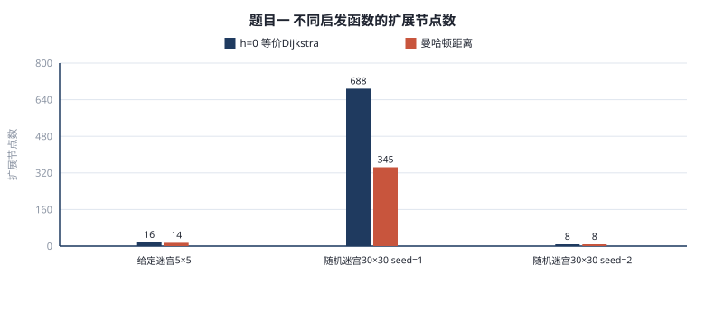
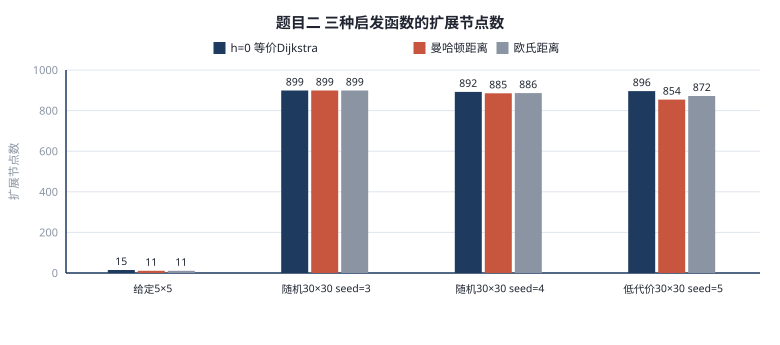
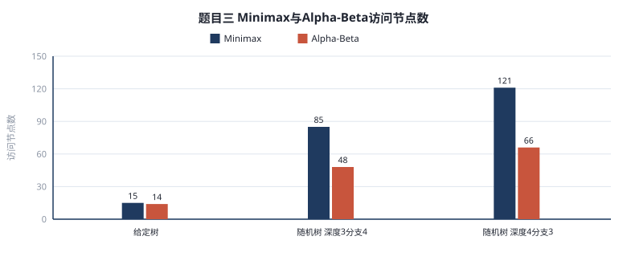
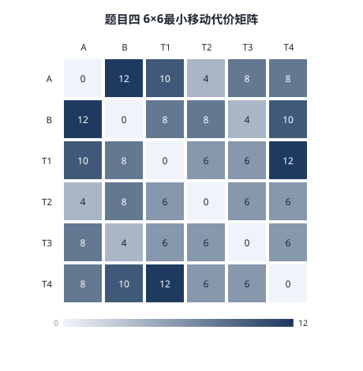

这次实验把A*、Minimax和Alpha-Beta写成能跑的代码，用它们解四道题，再自己设计对照实验，看启发函数、搜索深度和访问顺序会带来多大差别。报告里的数据都来自同一份experiment_data.json。
A*给每个格子算f=g+h。g是起点走到这里的真实代价，h是到终点的估计。每次从优先队列取f最小的格子，进过闭集的就不再展开。h只要不高估，A*就能找到最优解，h越紧，绕的弯路越少。我写了一个通用_astar，把进入格子的代价做成函数传进去，题目一恒为1，题目二返回格子权值。启发准备了h=0、曼哈顿和欧氏三种，h=0就是Dijkstra，拿来当基线。
Minimax在叶子返回分数，MAX层取最大，MIN层取最小，逐层回传。Alpha-Beta多了alpha和beta两个界。MAX节点里，如果某个孩子把alpha抬到不小于beta，后面的孩子就不用看；MIN节点反过来，beta被压到不大于alpha就停。剪枝不改变最终得分，只少访问节点。先看极端的子节点，界压得快，剪得也多。
实验在Windows11上跑，Python3.13，只用heapq、json、random三个标准库。随机地图固定种子，结果可复现。性能主要看扩展或访问节点数，耗时只记单次，当参考，不拿来排名。
地图里S是起点，E是终点，点是路，X是墙，只能上下左右走，走一格代价1。给定用例的路径是0,0 → 0,1 → 0,2 → 1,2 → 1,3 → 1,4 → 2,4 → 3,4，共8个坐标，和预期一致。
A*先贴上边往右，因为右边离E近，f小。走到第0行第3列发现X，才往下拐，从第1行第2列往右，再下到第2行第4列，最后进E。
| 场景 | h=0 | 曼哈顿 |
|---|---|---|
| 给定5×5 | 16 / 0.049ms | 14 / 0.027ms |
| seed=1 | 688 / 1.431ms | 345 / 0.940ms |
| seed=2 | 8 / 0.016ms | 8 / 0.013ms |
给定图差别小，因为路短。seed=1障碍多，h=0向四面铺，曼哈顿把明显走远的分支压下去，节点少了一半。seed=2几乎是直路，两个都是8，没什么可省。

每步代价改成踏进格子的数字，S和E按0算，最后踏进E不花钱。给定地图最优代价7，路径沿左边往下再贴底边走，避开右边和左下权值8的区域。累计是1、2、3、4、5、6、7，最后进E仍是7。
可采纳性我一开始有点绕。图里最小权值是1，走一步至少花1，所以真实代价一定不小于步数，也不小于曼哈顿距离，h没有高估。E按0算不影响，因为到E就停。如果出现0或负数，这个结论不成立；最小权值大于1时曼哈顿仍可采纳，只是估得偏小，可以乘最小权值让它更紧。我在50张随机加权图上对比h=0，最优代价50组全一样。
| 场景 | h=0 | 曼哈顿 | 欧氏 |
|---|---|---|---|
| 给定5×5 | 15 | 11 | 11 |
| seed=3 | 899 | 899 | 899 |
| seed=4 | 892 | 885 | 886 |
| seed=5低代价 | 896 | 854 | 872 |
权值1到9时三种启发几乎一样，因为代价方差大，真实代价比步数下界高很多，h被稀释。权值压到1到3后，曼哈顿降到854，说明代价越均匀，步数下界越有用。欧氏这几组没更好。

给定树根是MAX，两个MIN。三个MAX节点分别从3和5、6和9、1和2里挑大的，得到5、9、2；两个MIN挑小的，得到5和2；根挑大的，得5。
Alpha-Beta先看max1，回传5，min1的beta压到5。接着max2第一个叶子是6，已经不小于5，第二个叶子9被剪掉，访问从15降到14。这棵树只有6个叶子、12个不同节点，max2同时挂在min1和min2下面，所以按访问次数算是15和14。
| 树 | 得分 | Minimax | Alpha-Beta |
|---|---|---|---|
| 给定6叶12节点 | 5 | 15 | 14 |
| 深度3分支4 | 17 | 85 | 48 |
| 深度4分支3 | 4 | 121 | 66 |
| 树 | 从左到右 | 最佳排序 |
|---|---|---|
| 深度3分支4 | 48 | 31 |
| 深度4分支3 | 66 | 37 |
随机树上省43%到45%，树越大，省的绝对数越多，比例比较稳。MAX层先看大的，MIN层先看小的，界压得快，两棵树又省35%和44%。剪枝是算法自带的能力，顺序是自己能调的。

状态记双方位置、剩余宝藏、累计得分。行动A、B、A、B四回合，用剩余宝藏数奇偶判断轮到谁，偶数A，奇数B。收益是宝藏价值减距离，拿走后移到宝藏位置，已拿走的宝藏格仍可通行。U等于A分减B分，A最大化，B最小化，到深度H或宝藏拿完就停。
| 点位 | A | B | T1 | T2 | T3 | T4 |
|---|---|---|---|---|---|---|
| A | 0 | 12 | 10 | 4 | 8 | 8 |
| B | 12 | 0 | 8 | 8 | 4 | 10 |
| T1 | 10 | 8 | 0 | 6 | 6 | 12 |
| T2 | 4 | 8 | 6 | 0 | 6 | 6 |
| T3 | 8 | 4 | 6 | 6 | 0 | 6 |
| T4 | 8 | 10 | 12 | 6 | 6 | 0 |

A离T2最近，4步；B离T3最近，4步；T1值9但离A和B分别10和8，T2只值6却贴着A，这个错位决定了深度不同时选择不同。
H=2时程序给T2，U=-1。A拿T2赚2，但B反手拿T3赚3，U=-1；A若拿T3先亏1，B拿T1赚1，U=-2，更差。只看两步，A只能抢近的，仍吃亏。
H=4时给T3，U=3。A拿T3先亏1，但T3在中间，B为压U只能拿T1赚1；A从T3到T2赚0；B从T1到T4亏5，合计3。对照A先拿T2，B拿T3，A拿T1，B从T3拿T4，U只有1。多搜两层，A能看见后面的补偿，愿意先吃小亏。这说明贪心在对抗里不靠谱。
| H | 算法与顺序 | 访问节点 | 首步与U |
|---|---|---|---|
| 2 | Minimax | 17 | T2 / -1 |
| 2 | Alpha-Beta字典序 | 13 | T2 / -1 |
| 2 | Alpha-Beta价值降序 | 15 | T2 / -1 |
| 4 | Minimax | 65 | T3 / 3 |
| 4 | Alpha-Beta字典序 | 47 | T3 / 3 |
| 4 | Alpha-Beta价值降序 | 42 | T3 / 3 |
H=2剪枝省24%，H=4省28%。访问顺序和题目三相反：H=2降序反而多2个，H=4降序少5个。我猜是一套排序同时作用在A层和B层，A层想快抬alpha，B层却想慢压beta，两层抵消。H=2只有一层A一层B，B拖后腿更明显；H=4两层对两层，A占的便宜才多一点。所以排序要分层设计。
可采纳性我用100组随机场景验证，迷宫50组、加权50组，和h=0的最优解比，全部一致，一致率100%。这不是证明，但说明这类图没出现高估。
随机种子固定，排序用的子树值递归算出，没有随机成分。耗时只记单次，节点数更稳。
优化试了两类：换启发和给博弈树排序。前者在迷宫能减半，在加权地形受代价方差限制；后者分层设计后效果明显。下一步可以在加权图把曼哈顿乘最小权值，或给B层单独设计排序。这些在现有接口上能改，不用动主结构。
四题都跑通：题目一路径一致，题目二代价7，题目三得分5，题目四H=2是T2/-1，H=4是T3/3。
感受最深的有三点。曼哈顿在等代价迷宫很好用，能把扩展节点砍一半；权值差大时它仍可采纳，但引导作用弱。Alpha-Beta在随机树上稳定省四成以上访问，排序再省三成到四成。综合题里深度很关键，H=2的贪心会被反制，H=4才看得见补偿，排序也得看层。
这次实验让我感觉，搜索快不快不只由算法名字决定，启发准不准、先看谁、搜多深都会影响结果。